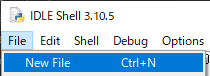
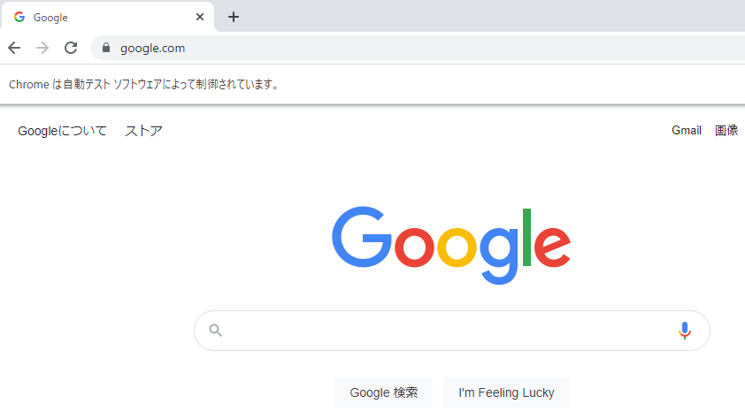

2022.09.08
スクレイピングの基本
それでは、早速始めてみましょう。
Pythonを導入すると、IDLEというエディタが付属しますので、こちらを使用しましょう。
コードを入力する画面に移動するため、New Fileを選択しましょう。

上記のコードを入れたら、Chrome Driverの場所を指定してあげます。
例えば、私の場合Desktopに置いているため、このようになります。
先ほどdriverを読み込みましたので、driverのメソッドget()を使用して、サイトを読み込んでみましょう。get()は、次のように書きます。
今回は、Googleのサイトをスクレイピングの例として紹介します。以下のコードを入力してください。
では、さっそく実行してみましょう。 F5キーを押すと実行できます。

実行できましたでしょうか。
実行しますと、検索バーの下に"自動テストソフトウェアによって制御されています。"と表示されていると思います。これは、Seleniumで実行しているから表示されています。
まとめ
お疲れさまでした。この技術を使うことで、楽に情報収集をすることができます。ぜひ、学んで使ってみてください。